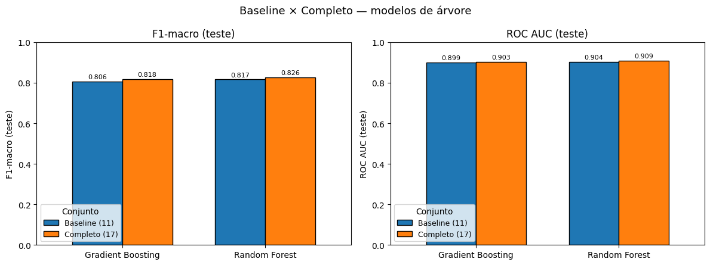
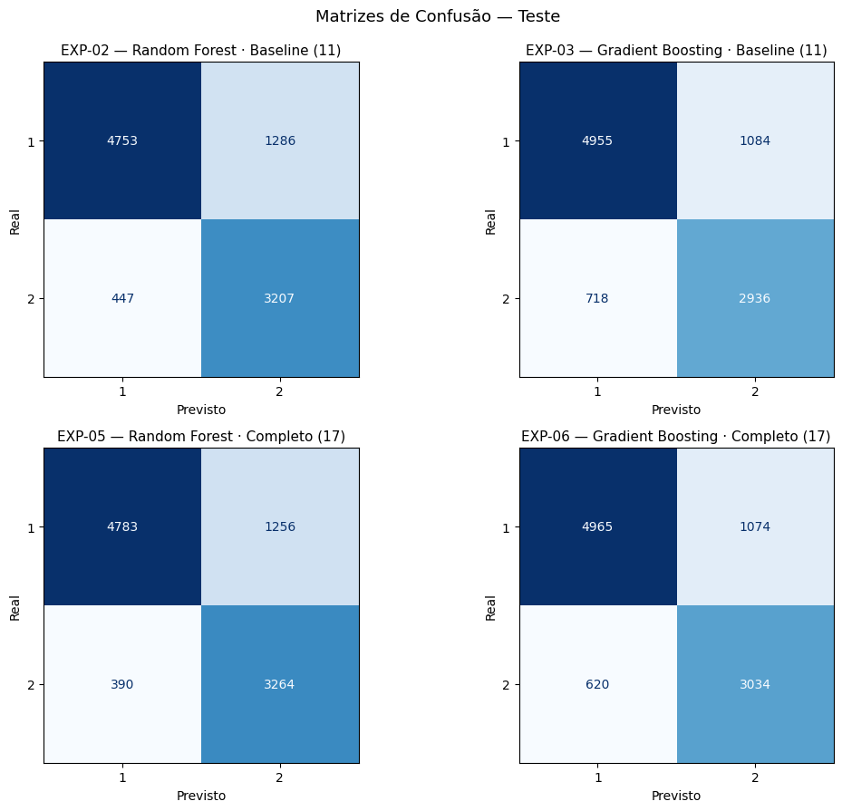
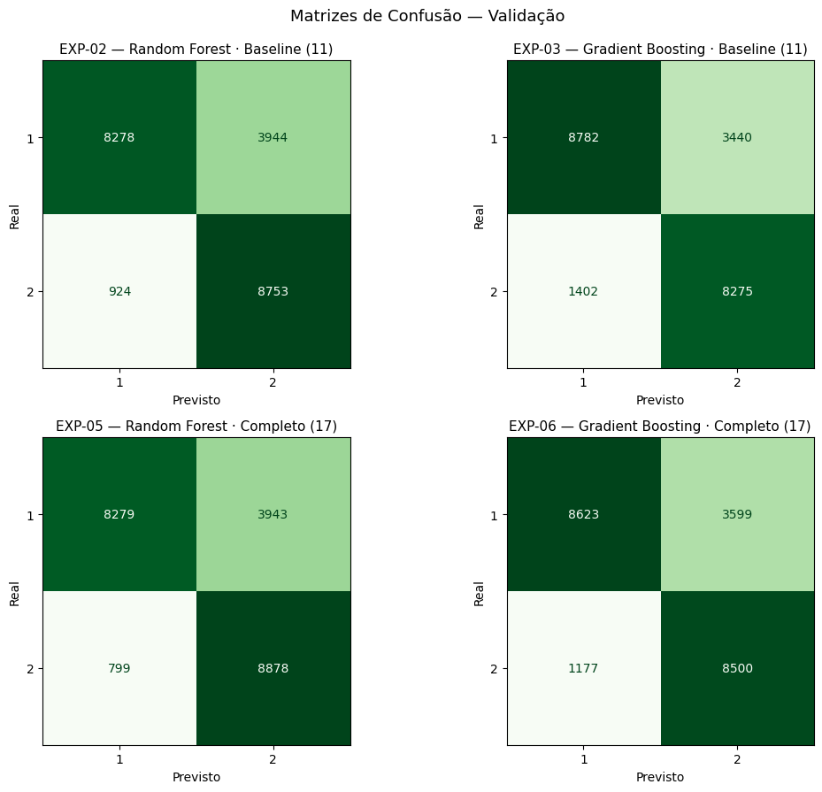

Entrega 3 · Design de Experimentos
| Exp. | Conjunto de atributos | Modelo | Busca de hiperparâmetros |
|---|---|---|---|
| EXP-01 | Baseline (11) | Regressão Logística | GridSearchCV |
| EXP-02 | Baseline (11) | Random Forest | RandomizedSearchCV |
| EXP-03 | Baseline (11) | Gradient Boosting | RandomizedSearchCV |
| EXP-04 | Completo (17) | Regressão Logística | GridSearchCV |
| EXP-05 | Completo (17) | Random Forest | RandomizedSearchCV |
| EXP-06 | Completo (17) | Gradient Boosting | RandomizedSearchCV |
Seleção por f1_macro · StratifiedKFold · refit = f1_macro · random_state = 42 · alvo serious (classificação binária)
01 / 07
Execução
Executados — modelos de árvore
Adiados
MODO_RAPIDO = True (máquina sem capacidade para o modo completo): grades de hiperparâmetros reduzidas e cv = 3. Os hiperparâmetros saem de um espaço de busca reduzido — não são a Tabela 1 oficial do PDF.
02 / 07
Resultados · Conjunto de teste (30%)
| Experimento | Acur. | Bal. acc. | Prec. (1) | Rec. (1) | F1 (1) | F1-macro | ROC AUC |
|---|---|---|---|---|---|---|---|
| EXP-02Random Forest · Baseline | 0,821 | 0,832 | 0,914 | 0,787 | 0,846 | 0,817 | 0,904 |
| EXP-03Gradient Boosting · Baseline | 0,814 | 0,812 | 0,873 | 0,821 | 0,846 | 0,806 | 0,899 |
| EXP-05Random Forest · Completo | 0,830 | 0,843 | 0,925 | 0,792 | 0,853 | 0,826 | 0,909 |
| EXP-06Gradient Boosting · Completo | 0,825 | 0,826 | 0,889 | 0,822 | 0,854 | 0,818 | 0,903 |
03 / 07
Visualização · Teste

Baseline × Completo — F1-macro e ROC AUC (teste)

Matrizes de confusão — teste (1 = grave, 2 = não-grave)
04 / 07
Validação · Dados nunca vistos
| Experimento | Acur. | Bal. acc. | Prec. (1) | Rec. (1) | F1 (1) | F1-macro | ROC AUC |
|---|---|---|---|---|---|---|---|
| EXP-02Random Forest · Baseline | 0,778 | 0,791 | 0,900 | 0,677 | 0,773 | 0,778 | 0,863 |
| EXP-03Gradient Boosting · Baseline | 0,779 | 0,787 | 0,862 | 0,719 | 0,784 | 0,779 | 0,856 |
| EXP-05Random Forest · Completo | 0,783 | 0,797 | 0,912 | 0,677 | 0,777 | 0,783 | 0,868 |
| EXP-06Gradient Boosting · Completo | 0,782 | 0,792 | 0,880 | 0,706 | 0,783 | 0,782 | 0,864 |
21.899 registros de validação · distribuição serious 55,8% / 44,2% (treino: 62,3% / 37,7%) · pipeline reaplicado sem vazamento
05 / 07

Teste → Validação
| Exp. | F1-macro | Δ | ROC AUC | Δ |
|---|---|---|---|---|
| EXP-02 | 0,82→0,78 | −0,039 | 0,90→0,86 | −0,041 |
| EXP-03 | 0,81→0,78 | −0,027 | 0,90→0,86 | −0,043 |
| EXP-05 | 0,83→0,78 | −0,043 | 0,91→0,87 | −0,041 |
| EXP-06 | 0,82→0,78 | −0,036 | 0,90→0,86 | −0,039 |
Quedas pequenas e uniformes (~0,03–0,04) → boa generalização.
06 / 07
Conclusões · ancoradas nos resultados
07 / 07